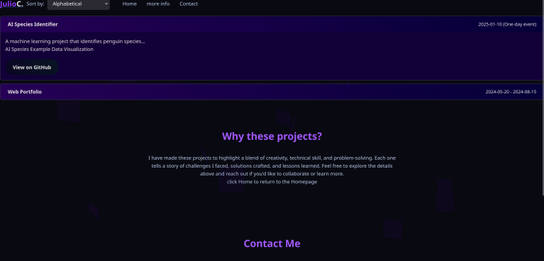
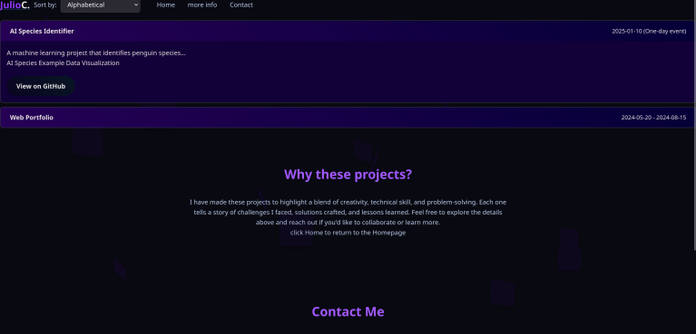

This project focuses on the Penguin Species Dataset,This project was part of a hackathon hosted by Teesside University, designed to teach A Level students about machine learning. Participants explored the Penguin Species Dataset to learn how to apply ML techniques, analyze data, and build predictive models.
Potential client motivations
- Understanding Penguin Species Characteristics: Analyze features like body mass, bill length, and flipper length to study ecological adaptations and behaviors of different penguin species.
- Predicting Penguin Species: Train machine learning models to classify penguin species quickly and accurately, assisting researchers and wildlife monitors.
- Conservation and Environmental Studies: Explore how physical traits relate to adaptation, helping conservationists target efforts to protect penguin populations.
- Ecological Insights: Investigate correlations between physical traits and habitats, and predict population trends based on environmental variables.
Dataset Features
The target variable is the species of the penguin (Adelie, Chinstrap, or Gentoo). Features used for prediction include:
- Bill length and Bill depth
- Flipper length
- Body mass
- Island (observation location)
- Sex (male or female)
Machine Learning Approach
The project uses a Random Forest classifier due to its high accuracy, versatility, and ability to handle both categorical and continuous features. Random Forest is also robust to noisy data and allows for extraction of feature importance, highlighting which traits are most significant in differentiating penguin species.
Key Benefits of This Approach
- High accuracy in species classification tasks.
- Handles noisy and differentiated data effectively.
- Requires minimal preprocessing or feature scaling.
- Provides insights into which features most strongly influence predictions.
This project demonstrates practical machine learning application in ecological research, offering both predictive power and insight into penguin species characteristics.
This project started as a responsive personal portfolio website built with Flask, HTML, CSS, and JavaScript. My original intention was to use Flask for routing, templating, and eventually integrating more dynamic functionality. The site was designed with a sleek dark theme, subtle animations, and project showcase sections, serving as a central hub for my work.
However, when I decided to host the project on GitHub Pages, I ran into a limitation: GitHub Pages only supports static files (HTML, CSS, JavaScript). Since Flask requires a Python runtime and server-side execution, I had to remove the Flask dependency and restructure the project into a fully static web app. This meant consolidating templates, simplifying the file structure, and ensuring all routes worked through static navigation.
The benefit of this change is that the site is now lighter, faster, and easier to deploy While I temporarily lose some of Flask's flexibility, this setup allows for free and reliable hosting while I focus on front-end polish and content.
Looking forward, I plan to:
- Continue developing new features in pure HTML, CSS, and JavaScript >.
- Showcase additional projects as I complete them.
- Add a work experience section as I gain more industry exposure.
- Potentially revisit Flask (or another backend framework) in the future when I need server-side features, but for now, GitHub Pages provides the perfect static hosting solution.
What I Learned:
- How to convert a Flask project into a fully static web app, including restructuring templates and routing.
- The limitations and benefits of static hosting versus server-side frameworks.
- Practical experience with HTML, CSS, and JavaScript to create responsive, interactive interfaces.
- How to organize and deploy a project on GitHub Pages, including domain verification and static file management.
- Planning a project roadmap: adding features incrementally while keeping the site functional and deployable.
This is the web app you are currently on, and it will evolve as I progress on my development journey.
 
